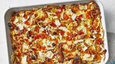

Overnight Matzo Make

This delicious breakfast has a light, custardy texture and a sweet matza flavour.
With raisins and cinnamon for extra yumminess, it's a great start to the day!
Ingredients
- cooking spray
- 6 matzo sheets
- 8 large eggs
- 1 cup whole milk
- ¾ cup white sugar
- ½ cup sour cream
- 2 teaspoons vanilla extract
- 1 teaspoon ground cinnamon
- ¾ teaspoon kosher salt
- ¼ teaspoon ground nutmeg
- ¼ cup chopped golden raisins
- ¼ cup chopped dried apricots
- ¼ cup chopped dried apples
Steps
- Lightly coat a 2-quart baking dish with cooking spray. Set aside.
- Break matzo sheets into bite-sized pieces.
Whisk together eggs, milk, sugar, sour cream, vanilla, cinnamon, salt, and nutmeg in a large bowl.
Stir in raisins, apricots, apples, and matzo pieces. Transfer to the prepared baking dish, smoothing into an even layer.
Cover with aluminum foil and transfer to a refrigerator to chill for 8 hours, or overnight.
- Preheat the oven to 350 degrees F (175 degrees C).
Remove baking dish from the refrigerator and uncover.
- Bake in the preheated oven until puffed and set, 40 to 45 minutes.
Remove from the oven and let sit at room temperature for at least 15 minutes.
Home